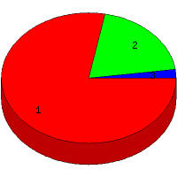

Week of 6/27/2010 to 7/3/2010: Top
3 of
3 File Types (Extensions)
Sorted by Access Count
Individual file types as determined by file extensions. All URLs that
do not contain an extension are counted as directories.

| Rank |
Type |
Accesses |
% |
Bytes |
% |
| 1 |
html
|
147 |
78.19 |
2,674,929 |
93.46 |
| 2 |
Directory (folder)
|
37 |
19.68 |
181,504 |
6.34 |
| 3 |
ico
|
4 |
2.13 |
5,624 |
0.20 |